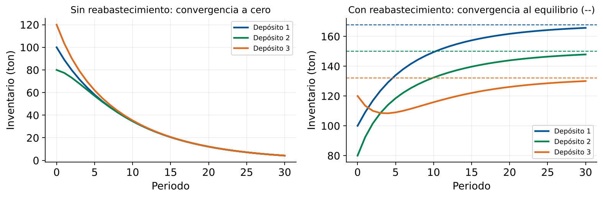

Eigenvalores y Eigenvectores
Estabilidad de Sistemas Logísticos
Módulo 6 — Herramientas de Ingeniería (Cierre)
Matemáticas 2 — Clase 30
Cátedra de Matemáticas 2
Ingeniería en Logística
Clase 30 — Cierre Módulo 6
Contenidos de la Clase
- Cierre del Módulo 6: Mapa de Herramientas
- Objetivos de Aprendizaje
- Definición de Eigenvalor y Eigenvector
- Cálculo Manual para Matrices 2×2
- Radio Espectral y Criterio de Estabilidad
- Matrices de Transición: Modelo Dinámico de Inventarios
- Equilibrio vía (I−A)⁻¹b
- Eigenvector Dominante: Distribución de Largo Plazo
- MATLAB: Calcular Eigenvalores con eig()
- MATLAB: Simular Dinámica de Inventarios
- Propiedades de los Eigenvalores
- Conexión Final: Eigenvalores en Todo el Curso
- Punto de Decisión
- Tarea y Cierre del Módulo 6
- Referencias
Cierre del Módulo 6: Mapa de Herramientas
Mod. 1-2
Matrices
Mod. 3
Vectores
Mod. 4
Espacios
Mod. 5
Regresión
Mod. 6
Herramientas
Las tres herramientas del Módulo 6
- Normas de vectores (Clase 28): medir errores y distancias
- Matrices de adyacencia (Clase 29): modelar redes y nodos críticos
- Eigenvalores (Clase 30): analizar estabilidad de sistemas dinámicos
Conexión profunda
Estas herramientas no son independientes:
• Las normas miden el "tamaño" de los eigenvectores
• Las matrices de adyacencia tienen eigenvalores que revelan conectividad
• Los eigenvalores determinan la convergencia de modelos de regresión iterativos
Objetivos de Aprendizaje
Al finalizar esta clase el estudiante será capaz de:
- Enunciar la definición de eigenvalor y eigenvector: \(A\mathbf{v}=\lambda\mathbf{v}\).
- Calcular eigenvalores de una matriz \(2\times2\) usando la ecuación característica \(\det(A-\lambda I)=0\).
- Usar
eig(A) en MATLAB para matrices de mayor dimensión.
- Definir el radio espectral \(\rho(A) = \max_i|\lambda_i|\) e interpretarlo.
- Aplicar el criterio: \(\rho(A)<1\) sistema estable, \(\rho(A)>1\) inestable.
- Calcular el inventario de equilibrio vía \((I-A)^{-1}\mathbf{b}\) y relacionarlo con el álgebra lineal del Módulo 1.
- Interpretar el eigenvector dominante como la distribución de largo plazo del sistema.
- Conectar eigenvalores con conceptos de los módulos anteriores.
Definición de Eigenvalor y Eigenvector
Definición fundamental
Para una matriz cuadrada \(A \in \mathbb{R}^{n\times n}\), un escalar \(\lambda\) y un vector \(\mathbf{v} \neq \mathbf{0}\) satisfacen:
\[ A\mathbf{v} = \lambda\mathbf{v} \]
entonces:
• \(\lambda\) es un eigenvalor (valor propio) de \(A\)
• \(\mathbf{v}\) es un eigenvector (vector propio) asociado a \(\lambda\)
Interpretación geométrica
- La matriz \(A\) transforma vectores del espacio
- Un eigenvector es especial: solo cambia de tamaño (escala \(\lambda\)), no de dirección
- Si \(\lambda > 1\): el vector se estira; si \(0 < \lambda < 1\): se contrae; si \(\lambda < 0\): cambia de dirección
El eigenvector mantiene su dirección bajo la transformación \(A\).
Cálculo Manual para Matrices 2×2
Ecuación característica: Para encontrar eigenvalores, resolvemos:
\[ \det(A - \lambda I) = 0 \]
Ejemplo: matriz de transición de inventarios
\[ A = \begin{pmatrix} 0.9 & 0.1 \\ 0.2 & 0.8 \end{pmatrix} \]
\[ \det\begin{pmatrix} 0.9-\lambda & 0.1 \\ 0.2 & 0.8-\lambda \end{pmatrix} = (0.9-\lambda)(0.8-\lambda) - 0.02 = 0 \]
\[ \lambda^2 - 1.7\lambda + 0.70 = 0 \quad\Rightarrow\quad \lambda = \frac{1.7 \pm \sqrt{2.89-2.80}}{2} = \frac{1.7 \pm 0.3}{2} \]
\[ \lambda_1 = 1.0, \quad \lambda_2 = 0.7 \]
Verificación para \(\lambda_1=1\)
\[ A\begin{pmatrix}1\\1\end{pmatrix} = \begin{pmatrix}0.9\times1+0.1\times1\\0.2\times1+0.8\times1\end{pmatrix} = \begin{pmatrix}1\\1\end{pmatrix} = 1\cdot\begin{pmatrix}1\\1\end{pmatrix} \checkmark \]
El vector \((1,1)^T\) es eigenvector con eigenvalor 1: distribución uniforme estable.
Radio Espectral y Criterio de Estabilidad
Radio espectral
\[ \rho(A) = \max_i |\lambda_i| \]
El valor absoluto máximo de los eigenvalores de \(A\).
| Condición | Interpretación | Aplicación logística |
|---|
| \(\rho(A) < 1\) | Sistema estable | Inventarios convergen sin reabastecimiento |
| \(\rho(A) = 1\) | Equilibrio marginal | Cadenas de Markov: distribución estacionaria |
| \(\rho(A) > 1\) | Sistema inestable | Inventarios divergen: requiere intervención |
Todos los eigenvalores dentro del círculo unitario → sistema estable. Basta uno fuera (\(\lambda_3=1.2\)) para que \(\rho(A)>1\) y el sistema sea inestable.
Matrices de Transición: Modelo Dinámico de Inventarios
Modelo dinámico de inventarios
\[ \mathbf{x}_{t+1} = A\mathbf{x}_t + \mathbf{b} \]
donde:
• \(\mathbf{x}_t\): vector de inventarios en el periodo \(t\)
• \(A\): matriz de transición (qué fracción del inventario se transfiere entre depósitos)
• \(\mathbf{b}\): vector de reabastecimiento externo
Ejemplo: sistema de 2 depósitos
\[ A = \begin{pmatrix} 0.85 & 0.10 \\ 0.15 & 0.90 \end{pmatrix}, \quad \mathbf{b} = \begin{pmatrix} 20 \\ 15 \end{pmatrix} \]
Interpretación (columnas de \(A\)): cada periodo, el 85% del inventario del depósito 1 permanece allí y el 15% pasa al depósito 2; del depósito 2, el 90% permanece y el 10% pasa al depósito 1.
Eigenvalores de \(A\)
\[ \det(A-\lambda I) = (0.85-\lambda)(0.90-\lambda) - 0.015 = \lambda^2 - 1.75\lambda + 0.75 = 0 \]
\[ \lambda_1 = 1.0, \quad \lambda_2 = 0.75 \quad\Rightarrow\quad \rho(A) = 1.0 \]
Con \(\lambda_1=1\) el inventario total se conserva: sin reabastecimiento (\(\mathbf{b}=\mathbf{0}\)) converge a la distribución 40% / 60% (eigenvector dominante). Pero con \(\mathbf{b}=(20,15)^T\) el total crece 35 ton por periodo: no hay equilibrio (ver diapositiva siguiente).
Equilibrio vía \((I-A)^{-1}\mathbf{b}\)
Estado de equilibrio: cuando \(\mathbf{x}_{t+1} = \mathbf{x}_t = \mathbf{x}^*\):
\[ \mathbf{x}^* = A\mathbf{x}^* + \mathbf{b} \quad\Rightarrow\quad (I-A)\mathbf{x}^* = \mathbf{b} \quad\Rightarrow\quad \mathbf{x}^* = (I-A)^{-1}\mathbf{b} \]
Conexión con Módulo 1-2
¡Esto es exactamente el sistema lineal \(M\mathbf{x}=\mathbf{b}\) que estudiamos al inicio del curso!
Con \(M = I-A\). Se resuelve con eliminación gaussiana o en MATLAB con (eye(n)-A)\b.
Ejemplo numérico
Para \(A = \begin{pmatrix}0.85&0.10\\0.15&0.90\end{pmatrix}\), \(\mathbf{b} = \begin{pmatrix}20\\15\end{pmatrix}\):
\[ I-A = \begin{pmatrix}0.15&-0.10\\-0.15&0.10\end{pmatrix}, \quad \det(I-A) = 0.015-0.015 = 0 \]
¡El determinante es cero! Esto ocurre porque \(\lambda=1\) es eigenvalor de \(A\).
Además, \(\operatorname{rang}(I-A)=1\) pero \(\operatorname{rang}([I-A\,|\,\mathbf{b}])=2\): el sistema es incompatible (las filas de \(I-A\) suman 0, pero \(20+15\neq0\)). No existe equilibrio: el inventario crece sin límite.
Condición de invertibilidad
\((I-A)\) es invertible si y solo si \(\lambda=1\) no es eigenvalor de \(A\).
Para sistemas con reabastecimiento constante, normalmente \(\rho(A)<1\) y el equilibrio es único.
Eigenvector Dominante: Distribución de Largo Plazo
Teorema de Perron-Frobenius (simplificado)
Si \(A\) tiene entradas positivas (como una matriz de transición logística), entonces:
• Su mayor eigenvalor \(\lambda_1\) es real, positivo y simple
• El eigenvector asociado \(\mathbf{v}_1\) tiene todas sus entradas positivas
• Para cualquier vector inicial \(\mathbf{x}_0\), la iteración \(\mathbf{x}_{t+1} = A\mathbf{x}_t\) converge a un múltiplo de \(\mathbf{v}_1\)
Interpretación logística: el eigenvector dominante \(\mathbf{v}_1\) representa la distribución de largo plazo del inventario entre los depósitos, independientemente de la distribución inicial.
Ejemplo: sistema de 3 depósitos
Para \(A = \begin{pmatrix}0.7&0.2&0.1\\0.1&0.8&0.1\\0.2&0.1&0.7\end{pmatrix}\), los eigenvalores son \(\lambda_1=1.0\), \(\lambda_2=\lambda_3=0.6\) (verificación: traza \(=2.2=1+0.6+0.6\)).
El eigenvector dominante es \(\mathbf{v}_1 = (1, 1, 1)^T\) (cada fila de \(A\) suma 1): distribución uniforme estable.
Si la demanda está concentrada en el depósito 1 pero el stock converge al depósito 2, hay desbalance estructural.
MATLAB: Calcular Eigenvalores con eig()
Salida esperada: eigenvalores 0.7, 0.8 y 1.0 (el orden puede variar) · \(\rho(A)=1\): equilibrio marginal · distribución de largo plazo: 33.33% en cada depósito.
% Matriz de transicion de inventarios (3 depositos)
A = [0.85 0.10 0.05;
0.10 0.80 0.10;
0.05 0.10 0.85];
% Calcular eigenvalores y eigenvectores
[V, D] = eig(A); % A*V = V*D
eigenvalues = diag(D);
fprintf('=== EIGENVALORES ===\n')
for i = 1:3
fprintf('Lambda %d: %.4f (|lambda| = %.4f)\n',...
i, eigenvalues(i), abs(eigenvalues(i)))
end
% Radio espectral
rho_A = max(abs(eigenvalues));
fprintf('\nRadio espectral rho(A) = %.4f\n', rho_A)
% Criterio de estabilidad
if rho_A < 1 - 1e-10
fprintf('Sistema ESTABLE: inventarios convergen sin reabastecimiento\n')
elseif abs(rho_A - 1) < 1e-10 % comparar con tolerancia
fprintf('Equilibrio marginal: sistema alcanza distribucion estacionaria\n')
else
fprintf('Sistema INESTABLE: inventarios divergen - requiere intervencion\n')
end
% Eigenvector dominante (asociado al mayor eigenvalor)
[~, idx_max] = max(abs(eigenvalues));
v_dominant = V(:, idx_max);
% Normalizar para interpretar como distribucion
v_dominant = v_dominant / sum(v_dominant);
fprintf('\nEigenvector dominante (distribucion de largo plazo):\n')
for i = 1:3
fprintf(' Deposito %d: %.2f%%\n', i, 100*v_dominant(i))
end
MATLAB: Simular Dinámica de Inventarios
% Parametros del sistema: cada periodo se consume el 10% del stock
A_s = 0.9 * A; % rho(A_s) = 0.9 < 1 -> sistema estable
b = [20; 15; 10]; % reabastecimiento semanal (ton)
x0 = [100; 80; 120]; % inventario inicial
n_periods = 30;
% Simular SIN reabastecimiento
x_no_reab = zeros(3, n_periods+1);
x_no_reab(:,1) = x0;
for t = 1:n_periods
x_no_reab(:,t+1) = A_s * x_no_reab(:,t);
end
% Simular CON reabastecimiento
x_with_reab = zeros(3, n_periods+1);
x_with_reab(:,1) = x0;
for t = 1:n_periods
x_with_reab(:,t+1) = A_s * x_with_reab(:,t) + b;
end
% Calcular equilibrio teorico
x_equilibrium = (eye(3) - A_s) \ b; % [167.86; 150.00; 132.14] ton
% Visualizacion
figure('Position',[50 50 950 420]);
subplot(1,2,1)
plot(0:n_periods, x_no_reab', 'LineWidth',2)
xlabel('Periodo'); ylabel('Inventario (ton)')
title('Sin reabastecimiento: convergencia a cero')
legend('Deposito 1','Deposito 2','Deposito 3','Location','best')
grid on
subplot(1,2,2)
plot(0:n_periods, x_with_reab', 'LineWidth',2)
hold on
plot([0 n_periods], [x_equilibrium(1) x_equilibrium(1)], 'k--', 'LineWidth',1.5)
plot([0 n_periods], [x_equilibrium(2) x_equilibrium(2)], 'k--', 'LineWidth',1.5)
plot([0 n_periods], [x_equilibrium(3) x_equilibrium(3)], 'k--', 'LineWidth',1.5)
xlabel('Periodo'); ylabel('Inventario (ton)')
title('Con reabastecimiento: convergencia al equilibrio')
legend('Deposito 1','Deposito 2','Deposito 3','Equilibrio','Location','best')
grid on

Resultado del script con \(A_s=0.9A\): equilibrio \(\mathbf{x}^*\approx(167.9,\ 150.0,\ 132.1)\) ton
Propiedades de los Eigenvalores
| Propiedad | Fórmula | Aplicación logística |
|---|
| Traza | \(\text{tr}(A) = \sum_i \lambda_i\) | Suma de tasas de retención = suma de eigenvalores |
| Determinante | \(\det(A) = \prod_i \lambda_i\) | Producto de eigenvalores indica volumen de transformación |
| Invertibilidad | \(A\) invertible \(\Leftrightarrow\) ningún \(\lambda_i=0\) | Sistema de equilibrio tiene solución única |
| Potencias | Si \(\lambda\) eigenvalor de \(A\), entonces \(\lambda^k\) eigenvalor de \(A^k\) | Comportamiento a largo plazo determinado por \(\lambda_{\max}^k\) |
| Perron-Frobenius | Si \(A>0\), entonces \(\lambda_1>0\) real y simple, \(\mathbf{v}_1>0\) | Distribución de largo plazo es única y positiva |
Verificación numérica
Para \(A = \begin{pmatrix}0.9&0.1\\0.2&0.8\end{pmatrix}\) con \(\lambda_1=1.0\), \(\lambda_2=0.7\):
• \(\text{tr}(A) = 1.7 = 1.0 + 0.7\) ✓
• \(\det(A) = 0.70 = 1.0 \times 0.7\) ✓
• \(A\) es invertible porque ningún eigenvalor es cero ✓
Conexión Final: Eigenvalores en Todo el Curso
Módulo 1-2: Sistemas lineales
• Eigenvalores de \(A^TA\) determinan el número de condición de un sistema
• Un número de condición alto indica sensibilidad a errores en los datos
Módulo 5: Regresión
• Los eigenvalores de \(X^TX\) indican multicolinealidad entre predictores
• Si un eigenvalor es cercano a cero, las variables son casi linealmente dependientes
Módulo 6: Redes
• El mayor eigenvalor de la matriz de adyacencia mide la "conectividad espectral" de la red
• La eliminación de un nodo crítico reduce significativamente este eigenvalor
¿Qué pregunta responde cada herramienta?
Normas: ¿Qué tan grande es el error?
Minimizar MAE vs RMSE
Adyacencia: ¿Cómo están conectados los nodos?
Identificar nodos críticos
Eigenvalores: ¿El sistema converge o diverge?
Diseñar sistemas estables
La gran idea del curso
El álgebra lineal no es solo cálculo de matrices: es un lenguaje para modelar sistemas reales.
Cada herramienta (normas, grafos, eigenvalores) responde una pregunta operativa específica en logística.
Punto de Decisión
Pregunta de Cierre
El sistema de gestión de inventarios de tu empresa tiene radio espectral \(\rho(A)=0.92\). Sin reabastecimiento, los inventarios se reducen un 8% por periodo. El eigenvector dominante indica que el depósito 2 concentrará el 45% del stock.
¿Intervendrías el sistema o lo mantendrías? ¿Qué reabastecimiento es óptimo?
Mantener el sistema
\(\rho=0.92<1\): el sistema es estable. No hay urgencia de restructuración.
Pero los inventarios decaen un 8% por periodo: se necesita reabastecimiento.
Reabastecimiento óptimo
El reabastecimiento que mantiene el nivel deseado \(\mathbf{x}^*\):
\(\mathbf{b} = (I-A)\mathbf{x}^*\) (sistema lineal directo).
Ajustar distribución
Si la demanda está concentrada en el depósito 1 pero el stock converge al depósito 2, hay desbalance estructural: modificar las tasas de transferencia \(A_{ij}\).
Tarea y Cierre del Módulo 6
Entregable del Módulo 6
- Script MATLAB ejecutable (
clase30_eigenvalores.m) con:
- Cálculo de eigenvalores para matriz de transición 3×3
- Simulación de dinámica con/sin reabastecimiento
- Cálculo del equilibrio \((I-A)^{-1}\mathbf{b}\)
- Gráfico de convergencia al equilibrio
- Párrafo de decisión (100 palabras): recomendación basada en \(\rho(A)\) y eigenvector dominante
Lectura preparatoria para Clases 31-32
Lay, Cap. 7: Ortogonalidad y Mínimos Cuadrados (repaso)
Material del curso: Rúbrica del Proyecto Final Integrador
Pensar: ¿cómo integrar regresión, normas, redes y eigenvalores en un solo modelo logístico?
Próximas clases: Proyecto Final
Clases 31-32 — Proyecto Integrador: Modelado completo de una red logística con pronóstico, optimización y análisis de estabilidad
Referencias
- Lay, D.C., Lay, S.R., McDonald, J.J. (2016). Álgebra Lineal y sus Aplicaciones (5a ed.). Pearson. Cap. 5.1-5.2 (Eigenvalores y eigenvectores), pp. 283–310.
- Strang, G. (2016). Introduction to Linear Algebra (5th ed.). Wellesley-Cambridge. Cap. 6 (Eigenvalues and Eigenvectors).
- Horn, R.A. & Johnson, C.R. (2012). Matrix Analysis (2nd ed.). Cambridge. Cap. 8 (Perron-Frobenius Theorem).
- MATLAB Documentation.
eig, condeig, schur. https://www.mathworks.com/help/matlab/ref/eig.html
- Material propio: Script
clase30_eigenvalores.m, Dataset de inventarios, Rúbrica de evaluación.
Matemáticas 2 — Clase 30 | Eigenvalores y Estabilidad
¡Felicitaciones!
Módulo 6 — Herramientas de Ingeniería: Completado
Próximas clases: Proyecto Final Integrador
contacto@mat2logistica.edu